复习题A · 1
- 如图，在长方体 中， 为 的中点， . 求异面直线 与 所成角的大小.
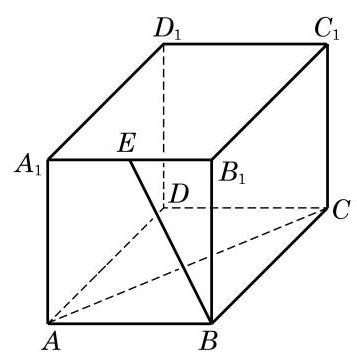
(第 1 题)
教师整合版 / 沪教版高中数学
必修第三册
第10章空间直线与平面 · 保留教材主线与原题
教材与正式教参整合
(1)公理 1 如果一条直线上有两点在一个平面上，那么这条直线上所有的点都在这个平面上.
(2)公理 2 不在同一直线上的三点确定一个平面.
推论 1 一条直线和这条直线外的一点确定一个平面.
推论 2 两条相交直线确定一个平面.
推论 3 两条平行直线确定一个平面.
(3)公理 3 如果两个不同的平面有一个公共点，那么它们有且只有一条过该点的公共直线.
(4)公理 4 平行于同一条直线的两条直线互相平行.
(1)有三种可能的位置关系:相交、平行、异面.
(2)等角定理 如果一个角的两边和另一个角的两边分别平行并且方向相同，那么这两个角相等.
推论 1 如果一个角的两边和另一个角的两边分别平行，那么这两个角相等或者互补.
推论 2 如果两条相交直线和另两条相交直线分别平行，那么这两组直线所成的锐角 (或直角)相等.
(3)异面直线的定义 不同在任何一个平面上的两条直线叫做异面直线.
(4)异面直线判定定理 过平面外一点与平面上一点的直线，和此平面上不经过该点的任何一条直线是异面直线.
(5)异面直线所成角的定义 两条异面直线平移到相交位置时所得到的锐角或直角， 称为这两条异面直线所成的角.
(1)直线与平面平行的判定定理 如果不在平面上的一条直线与这个平面上的一条直线平行，那么该直线与这个平面平行.
(2)直线与平面平行的性质定理 如果一条直线与一个平面平行，过这条直线的一个平面与此平面相交，那么其交线必与该直线平行.
(3)线面垂直的定义 如果一条直线与平面上的任意一条直线都垂直，就说这条直线与这个平面互相垂直.
(4)直线与平面垂直的判定定理 如果一条直线与一个平面上的两条相交直线都垂直，那么此直线与该平面垂直.
(5)直线与平面垂直的性质定理 垂直于同一个平面的两条直线互相平行.
推论 1 过一点有且只有一个平面与给定的直线垂直.
推论 2 过一点有且只有一条直线与给定的平面垂直.
(6)线面所成角的定义 平面的一条斜线和它在平面上的投影所成的锐角，叫做这条直线和这个平面所成的角.
(7)三垂线定理 平面上的一条直线和这个平面的一条斜线垂直的充要条件是它和这条斜线在平面上的投影垂直.
(1)两个平面平行的判定定理 如果一个平面上的两条相交直线与另一个平面平行， 那么这两个平面平行.
(2)两个平面平行的性质定理 如果两个平行平面同时和第三个平面相交，那么它们的交线平行.
(3)从一条直线出发的两个半平面所组成的图形叫做二面角，一个二面角的大小等于它的平面角的大小.
(4)平面与平面垂直的判定定理 如果一个平面经过另一个平面的一条垂线，那么这两个平面垂直.
(5)平面与平面垂直的性质定理 如果两个平面垂直，那么其中一个平面上垂直于两平面交线的直线与另一个平面垂直.

(第 1 题)
(1) OM // PD ;
(2) OM // 平面 PCD ;
(3) OM //平面 ；
(4) OM //平面 ；
(5) OM // 平面 .
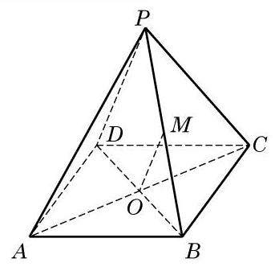
(第 2 题)
2.(1)正确,理由略. (2)正确,理由略. (3) 正确, 理由略. 正确. 平面 . (5) 不正确. 平面 .
(1)求证:四边形 BDEF(图中阴影部分)是一个梯形；
(2)求四边形 BDEF 的面积.
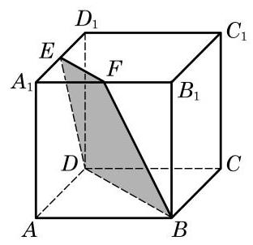
(第 3 题)
3.(1)提示: 与 平行且相等. (2) . 提示:在梯形 上, 过 作下底边 的垂线,垂足为 为 与 间的距离.
(1)若直线 与平面 斜交，则 内不存在与 垂直的直线；
(2)若直线 上平面 ，则 内不存在与 不垂直的直线；
(3)若直线 与平面 斜交，则 内不存在与 平行的直线；
(4)若直线 平面 ，则 内不存在与 不平行的直线.
4.(1)假命题,理由略. (2)真命题,理由略. (4)假命题,理由略.
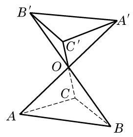
(第 6 题)
(1)若 ，则 ；
(2)若 ，则 ；
(3)若 ，则 ；
(4)若 ，则 .
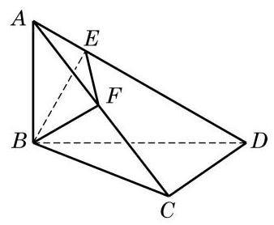
(第 8 题)
(1)若 ， ，则 ；
(2)若 ， ，则 ；
(3)若 ， ，则 .
1.(1)假命题,理由略. (2)假命题,理由略. (3)假命题, 理由略.
(1)求证: 平面 ；
(2)求证: 平面 .
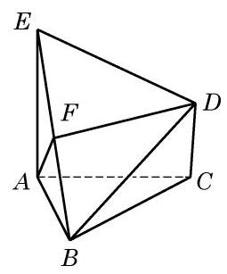
(第 4 题)
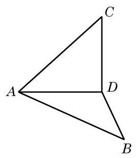
(第 6 题)
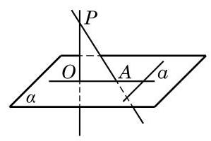
(第 8 题)
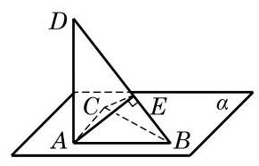
(第 9 题)
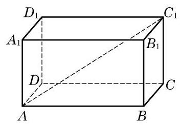
(第 2 题)
我们知道, 用一把刀去切一个球形的西瓜, 其切口截面是一个圆. 但如果用一个平面去截一个正方体, 得到的截面会是什么图形呢?
平面截在正方体的不同位置时, 截面的形状会有所不同, 下面是正方体几种截面图形的示意图.
三角形正方形矩形
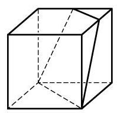
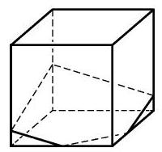
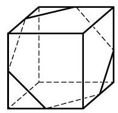
梯形五边形六边形
利用空间线面关系的有关性质, 我们可以准确地作出平面截正方体所得到的截面图形.
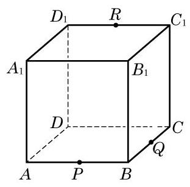
问题: 已知 分别是正方体 的棱 和 的中点,如何作出过 三点的平面 截正方体所得到的截面呢?
作法:
(1)取 的中点 ，连接 . 由 ， ,知 ,从而由两平行线 和 确定的平面即为 ,从而 .
(2)延长 ，交 的延长线于点 . 连接 ，交 于点 . 由直线 ,知 . 又由 ,可得 .
(3)延长 ，交 的延长线于点 . 连接 ，交 于点 . 同理可得 ,从而 六点都在平面 上.
连接 三点得到的三角形 是所要求的截面吗? 为什么?
(4)连接线段 及 ,得六边形 . 由于六边形 各边的端点都在正方体的表面上, 因此六边形 PQWRST 的各条边也在正方体的表面上. 所以, 六边形 PQWRST 就是平面 截正方体所得的截面.
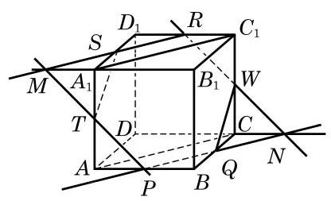
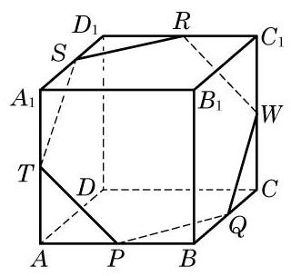
由上可知,作平面 截正方体的截面的关键,是确定截面多边形的各个顶点:
(1)要确保截面多边形的各个顶点都在平面 上；
(2)要确保截面多边形的相邻两个顶点都在正方体的同一表面上.
由于正方体的棱所在直线是相邻两个表面的交线, 因此常利用棱上的点从一个表面转化到另一个表面.
思考: 用一个平面截正方体.
(1)如果截面是三角形，可以截出几类不同的三角形？为什么？
(2)能否截出正五边形？为什么？
(3)其截面有没有可能是边数超过 6 的多边形？为什么？
苏步青(1902—2003)，著名数学家、教育家，中国微分几何学派的创始人，曾被誉为 “东方第一几何学家”. 1955 年当选为中国科学院学部委员(即后来的中国科学院院士). 苏步青主要从事微分几何学和计算几何学等方面的研究, 在仿射微分几何学和射影微分几何学等领域中取得杰出的研究成果, 在几何外型设计、计算机辅助几何设计等领域做出了开创性的成就. 他还是一位数学教育的大师.
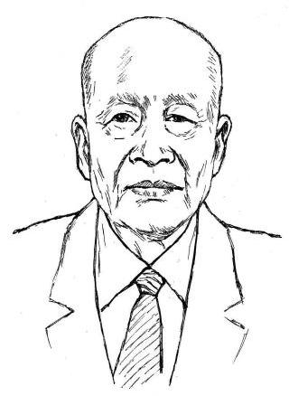
苏步青于 1902 年出生在浙江省平阳县的一个小山村. 童年时代的他曾是牛背上的野孩子，小时候的求学路经历了从“背榜”到第一名的过程, 13 岁时苏步青考入在温州的浙江省立第十中学读书. 1919 年 7 月, 他在校长洪彦远先生的资助下到日本留学. 经过一个月的日语补习，1920 年 2 月参加东京高等工业学校招考，以优秀的成绩被录取到该校电机系学习. 后又报考日本东北帝国大学理学院数学系，以两门课均满分的成绩被录取. 在就读期间，苏步青在仿射微分几何领域就已取得了出色的研究成果，数学界称他为 “东方国度上升起的灿烂的数学明星”，并于 1931 年获得理学博士学位. 1931 年秋, 因与早于他留学日本的陈建功先生有约在先, 苏步青回到阔别 12 年的故土, 到浙江大学数学系任教. 经过多年的努力, 包括在抗战期间随浙江大学西迁贵州这一段颠沛流离的艰辛岁月中, 他们获得了一系列重要研究成果, 在国际上享有崇高的声誉, 以苏步青为首的浙江大学微分几何学派也开始形成. 两位先生创导的数学讨论班活动, 在培养学生上居功至伟. 浙江大学因而被英国科技史专家李约瑟(Joseph Needham)誉为“东方的剑桥”. 1952 年，全国高等院校院系调整，苏步青被调到复旦大学，从此创立于浙江大学的微分几何学派在复旦大学得到发扬和光大. 在 70 多岁高龄时，苏步青还结合解决船体数学放样的实际课题, 创建和开始了计算几何这一新的研究方向.
除了出色的研究工作，苏步青还是一位优秀的教育家. 他一生教书育人，为祖国培养了一大批优秀的数学人才, 在他培养的学生中, 有多名是中国科学院院士. 苏步青也十分关注基础教育，曾领导编写过中学数学教材，多次给中小学生作报告，在晚年还亲自为提高中学数学教师的水平开办讲学班. 1991 年起设立的苏步青数学教育奖, 奖励为中学数学基础教育做出杰出贡献的教师，已成为我国中学数学教育的大奖.
由于苏步青的杰出贡献，在他逝世后不久的 2003 年 8 月，国际工业与应用数学联合会(ICIAM)决定设立“ICIAM 苏步青奖”，奖励在数学对新兴经济和人类发展的应用方面做出突出贡献的个人. 这是国际工业与应用数学联合会继拉格朗日 (Lagrange) 奖、柯拉兹 (Collatz)奖、先驱(Pioneer)奖及麦克斯韦(Maxwell)奖后设立的第五个奖项，是第一个以中国科学家名字命名的国际数学大奖.